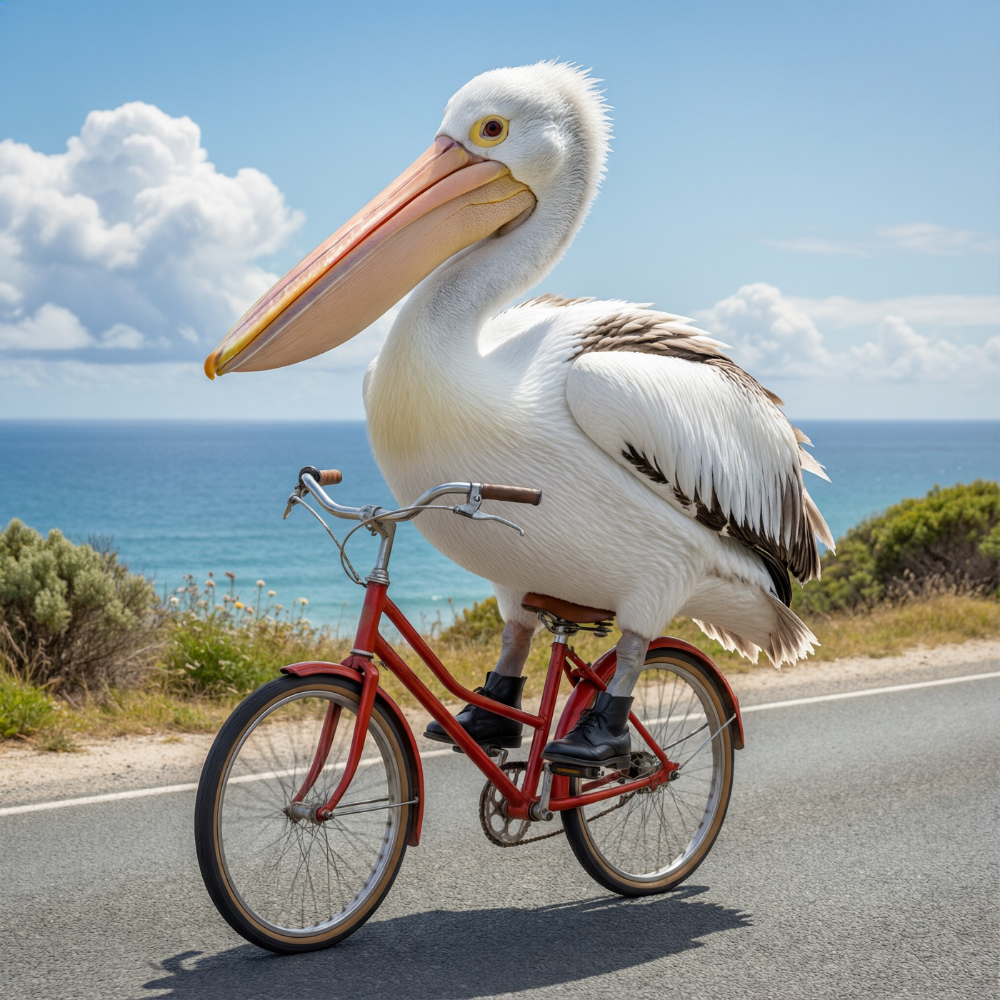
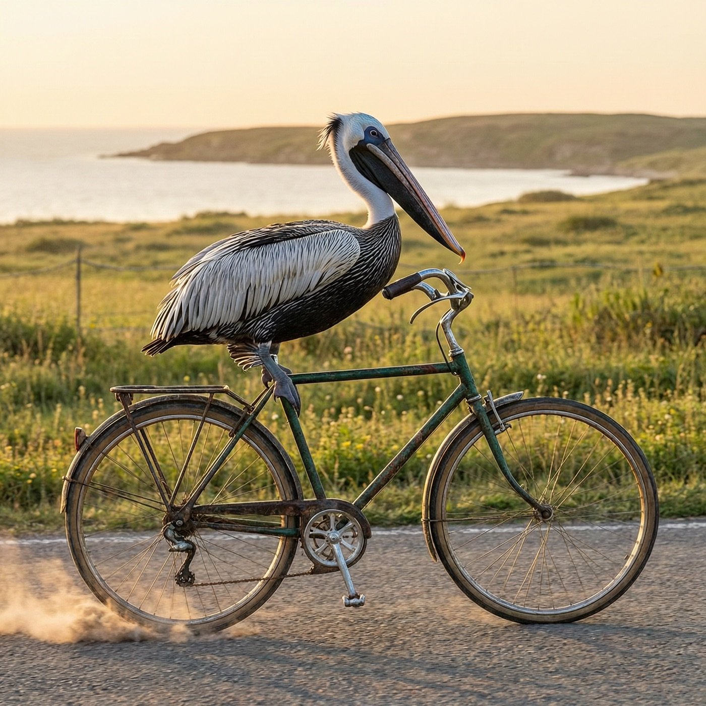

一道流传多年的 AI 考题，一句不带任何修饰词的题面。7 个模型交卷，2 个限流弃考——最有趣的是，弃考原因居然是评测员自己。
「鹈鹕骑自行车」是 Simon Willison 多年前带火的一个 LLM 视觉测试：让模型直接生成一段 SVG 代码，画出一只骑自行车的鹈鹕。题面看似简单，实际上同时考察三件事：自行车的机械结构对不对（两个轮子、车架、脚踏）、鹈鹕的物种特征在不在（大嘴、喉囊、蹼掌）、以及模型能不能把「骑」这个动作关系画对——腿要够到踏板，翅膀要够到车把。
最近这题在国内文生图圈又翻红了一轮，各家图像模型轮流被这道题「处刑」。于是我把手里那台内网 New API 中转站（192.168.1.61:3000）上能用的 9 个模型全部拉来同台竞技。
| 模型 | 组别 | 题面 | 结果 |
|---|---|---|---|
| qwen-image-2.0-pro | 文生图 | 一只骑自行车的鹈鹕（零修饰词） | ✅ 交卷 |
| wan2.7-image-pro | ✅ 交卷 | ||
| qwen3.7-plus | 文本 → SVG | 请用SVG代码画一只骑自行车的鹈鹕。只输出SVG代码，不要任何解释。 | ✅ 交卷 |
| qwen3.6-flash | ✅ 交卷 | ||
| deepseek-v4-pro | ✅ 交卷 | ||
| deepseek-v4-flash-0731 | ✅ 交卷 | ||
| glm-4.7-flash | ✅ 交卷 | ||
| glm-5.3 | 文本 → SVG | 同上 | ❌ 限流弃考（429） |
| glm-5.3-flash | ❌ 限流弃考（429） |
全部走内网中转站的 OpenAI 兼容接口：图像模型打 /v1/images/generations，文本模型打 /v1/chat/completions。文本组的 SVG 未做任何人工修改，从返回里截出 <svg>…</svg> 原样内嵌到本文——包括那些画错的。
qwen-image-2.0-pro 交出了全场最符合题意的作品：鹈鹕端端正正坐在红色自行车的车座上，脚踩踏板，车把、辐条、车筐结构完整，背景是海边公路。最绝的是它给鹈鹕脚上画了两只黑色小皮鞋——蹼掌配皮鞋，荒诞感和完成度双满分。

wan2.7-image-pro 的照片是全场美术质量最高的：黄金时刻的光线、复古绿色自行车、海边草甸、后轮扬起的尘土，氛围感直接拉满。但是——鹈鹕是站在车架上摆拍的，不是骑。题意理解这一题，它交了个「最美错题」。

自行车该有的机械件一个不落：双层辐条、链传动（虚线画出了链线）、曲柄双踏板、弯形车把。鹈鹕的配件也最全——嘴尖的钩、头冠羽、尾羽、翅膀一根根羽毛线。两条腿从身体跨过车架伸向踏板，唯一的小瑕疵是腿的落点和踏板差了几个像素，属于「姿势到位、脚没踩实」。
全场元素量最大的一家：云朵、路缘石、双向运动线、扬尘、羽冠、翅膀上的羽毛线条都有。最见功力的是喉囊上画了皮肤褶皱，这是真的理解了鹈鹕的解剖特征。双腿分别连到两个踏板上，踏板还带了旋钮细节。缺点是画面元素太挤，鹈鹕的身子被车架穿插得有点乱。
意外的惊喜卷：别人都没画的黄色挡泥板它画了，还给了鹈鹕两片腮红。结构上曲柄上下双踏板、双腿各自对应，喉囊也有褶皱细节。羽冠只画了一小撮，翅膀分了前后两层。整体是「小而全」的路线。
风格上最自洽的一家：全场统一 8px 粗黑描边，绒毛身体用 10 个圆形叠出来（思路清奇），金色喉囊配鼻孔细节，双腿黑色火柴腿踩在踏板上。代价是云朵画得像三个齿轮，车座大得像一块黑板——但你要说它不像「一张画」，它比谁都像一张画。
最简的一份：轮子只有 4 根辐条，没有链条，鹈鹕的嘴小得不像鹈鹕，腿悬在半空没踩任何东西。最出圈的是踏板被安装在了后轮的轴心上——机械结构上属于车祸现场。但公平地说，两个轮子、车架、鸟、嘴、眼睛都在，「一只鸟和一辆车」的意象是成立的，只是「骑」的动作没做出来。
glm-5.3 和 glm-5.3-flash 全程 429 Too Many Requests，重试三轮（含间隔 75 秒的冷静期）依旧 429，换了另外两把 key（智谱中转2/3）也是 429——说明拥堵在通道级别，不随 token 换钥匙而改变。
而最讽刺的原因是：评测脚本和评测员共用同一把 key。我这个会话本身就跑在中转站的 glm-5.3-flash 上——我一边出题监考，一边自己就在挤占 glm 通道的限额。属于「裁判下场参赛，把自己挤出局」。
| 模型 | 机械结构 | 鹈鹕特征 | 「骑」的动作 | 一句话点评 |
|---|---|---|---|---|
| qwen-image-2.0-pro | ★★★★★ | ★★★★★（+小皮鞋） | ✅ 端坐踩踏 | 题意理解天花板 |
| wan2.7-image-pro | ★★★★☆ | ★★★★★ | ❌ 站着摆拍 | 美术第一，题意跑偏 |
| qwen3.7-plus | ★★★★★ | ★★★★☆ | ⚠️ 脚没踩实 | SVG 机械结构最严谨 |
| deepseek-v4-pro | ★★★★☆ | ★★★★★（喉囊褶皱） | ✅ 双腿双踏板 | 细节狂魔 |
| deepseek-v4-flash-0731 | ★★★★☆ | ★★★★☆（+挡泥板+腮红） | ✅ 双腿双踏板 | 小而全，会卖萌 |
| qwen3.6-flash | ★★★☆☆ | ★★★★☆ | ✅ 腿在踏板上 | 粗描边卡通，风格自洽 |
| glm-4.7-flash | ★☆☆☆☆（踏板在后轮轴） | ★★☆☆☆（嘴太小） | ❌ 腿悬空 | 交了卷，但没完全会 |
| glm-5.3 / glm-5.3-flash | — 429 弃考 — | 被评测员自己挤掉的 | ||
几点观察：
复现只需一句话：curl $RELAY/v1/chat/completions -d '{"model":"...","messages":[{"role":"user","content":"请用SVG代码画一只骑自行车的鹈鹕。只输出SVG代码，不要任何解释。"}]}'。你也在跑 New API 中转站的话，把 model 换成你列表里的名字就行。